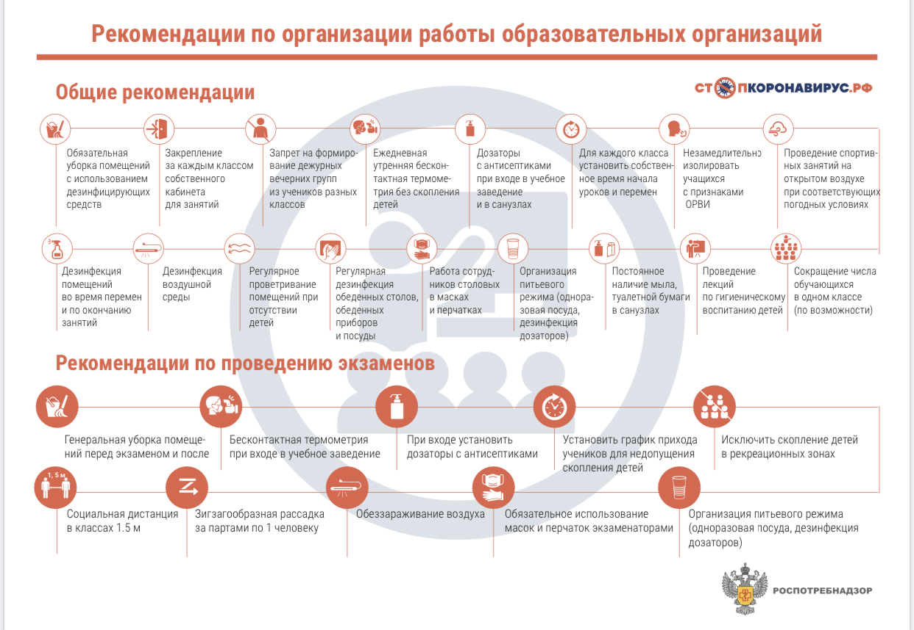
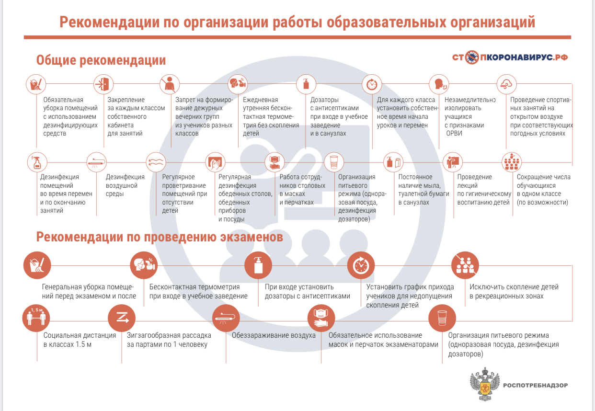

В соответствии с Постановлением Главного государственного санитарного врача Российской Федерации от 30.06.2020 №16 «Об утверждении санитарно-эпидемиологических правил СП 3.1/2.4 3598-20 «Санитарно-эпидемиологические требования к устройству, содержанию и организации работы образовательных организаций и других объектов социальной инфраструктуры для детей и молодежи в условиях распространения новой коронавирусной инфекции (COVID-19)», которое действует на период с 1 сентября по 31 декабря 2020 года, в школе созданы специальные условия для минимизации рисков распространения COVID-19:
График организации образовательного процесса
График регулярного обеззараживания воздуха
Информация Минздрава о Covid-19
Как правильно носить маску
Правила безопасности в офисе
Правила безопасности для людей в группе риска
Вакцинация против гриппа
Анна Попова: Вакцинация против гриппа
Профилактика гриппа
 
